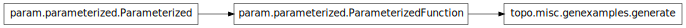

topo.misc.genexamples¶

Module¶
Commands for running the examples files in various ways.
Like a Makefile: contains a list of targets (and groups of targets) that specify various commands to run.
E.g.
topographica -c ‘from topo.misc.genexamples import generate; generate(targets=[“all_quick”,”saved_examples”])’
Runs the ‘all_quick’ target if called without any arguments:
topographica -c ‘from topo.misc.genexamples import generate; generate()’
To add new single targets, add to the targets dictionary; for groups of targets, add to the group_targets dictionary.